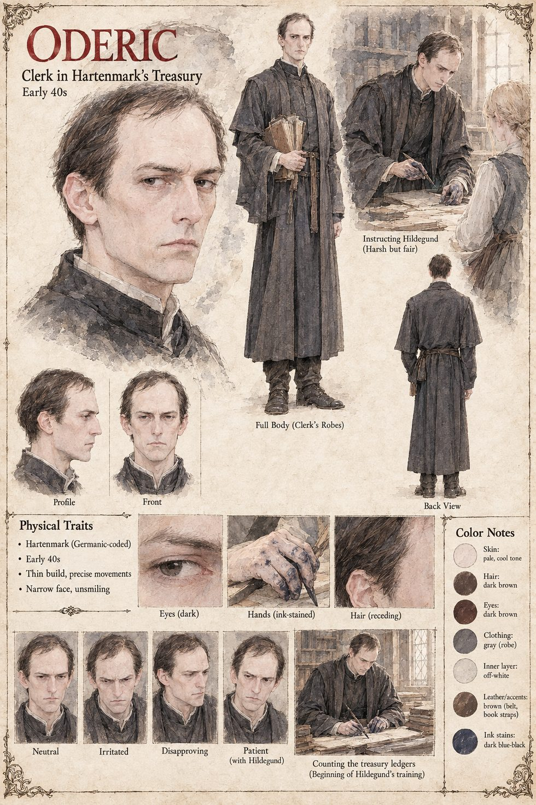

Oderic
Clerk assigned to Hildegund at Hartenmark · told to treat the princess as any apprentice · early forties by his sheet
A clerk whom Ulrich assigns, within a month of her arrival, to Hildegund, with instructions, on pain of his own position, to treat her exactly as badly as he would treat any other apprentice who made an apprentice's ordinary mistakes. What she is given, within the month, is a small windowless room off the treasury, a stool and him. The manuscript gives him nothing more: no speech, no opinion and no appearance, and the page keeps to that. The sheet's early forties, receding dark-brown hair, narrow unsmiling face, plain dark clerk's robe and ink-stained hands are its own; it draws him standing with an armful of books and again bent over a desk with a pen.